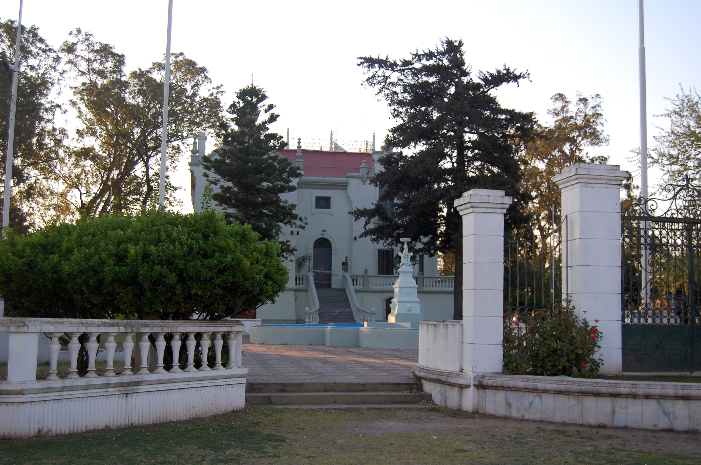

Algunas de las atracciones turísticas más populares en Río Tercero
Museo Enrique Gandolfo
Av. Perón Balbín, Río Tercero 5850 Argentina

Balneario Municipal
Av. Perón Balbín, Río Tercero 5850 Argentina
La Casa de la Cultura
Av. Perón Balbín, Río Tercero 5850 Argentina
Iglesia Nuestra Señora de Lourdes
Av. Perón Balbín, Río Tercero 5850 Argentina

Museo Estafeta Postal Lastenia
Av. Perón Balbín, Río Tercero 5850 Argentina